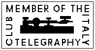

This used to be a meeting place where ARI members could register if CW was their
preferred mode.
Now it is an international club that includes foreign members.
The club is managed by:
IN3VST
Vito Vetrano
Via Verdi 27/A
I-39012 Meran (BZ)